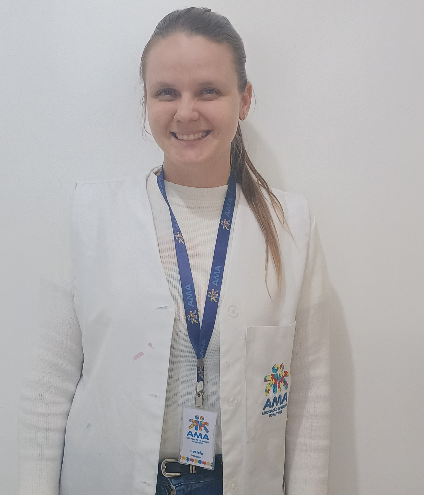
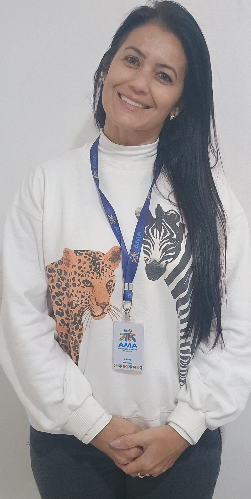

Bom o AMA que o melhor para os seus usuários,
por conta disso, eles possuem uma equipe de profissionais
altamente qualificados e especializados em suas áreas de atuação.

A Letícia atende os AEEs que são os Atendimento Educacional Especializado
que começa a partir dos 6 anos de idade.
Ela trabalha com a habilitação em pedagogicas focando
no objetivo de cada um dos seus usuários.
Ela entrou por causa que gostou
muito do seu estágio na falcudade.
Ela utiliza alguns recursos como jogos, atividades para
desenvolver a coodernação motora fina, e também atividades
para desenvolver a coodernação motora do ambiente/sensorial.
A Katryn atende os PAF que são os Programa de Atendimento às Famílias.
Onde ela os pais e faz a psicoterapia com eles.
São utilizadas 20 sessões com os pais por um período
e eles voltam para a listar de espera e possívelmente
eles voltam.
Ela já trabalhou com crianças com autismo na falcudade
por conta disso ela fez o seu TCC sobre "Maternidade Atípica".

A Jane atende o SPE que é o Serviço Pedagógico Específico.
Onde ela trabalha com usuários a partir de 18 anos.
Ela utilizar jogos sobre coordenação motora fina,
percepção e atenção junto com concentração.
Já trabalhou em algumas APAEs e quando soube do AMA
ela quis experientar para ver como é a experiencia de
trabalhar com os autistas.
A Fernanda também atende o SPE que é o Serviços Pedagógicos Específicos.
Ela já trabalhou na educação infantil que por acaso atendia um aluno
com o TEA e depois fez especialização em pos neuropsicopedagogia que
que viu uma oportunidade de trabalha no AMA.
Seus metodos de ensina são como atividades de mémoria, atenção,
socialização e vivencias do dia a dia.
Obs: Seus usuários são crianças que nã vão pra escola por causa
que eles entraram na resolução sem.